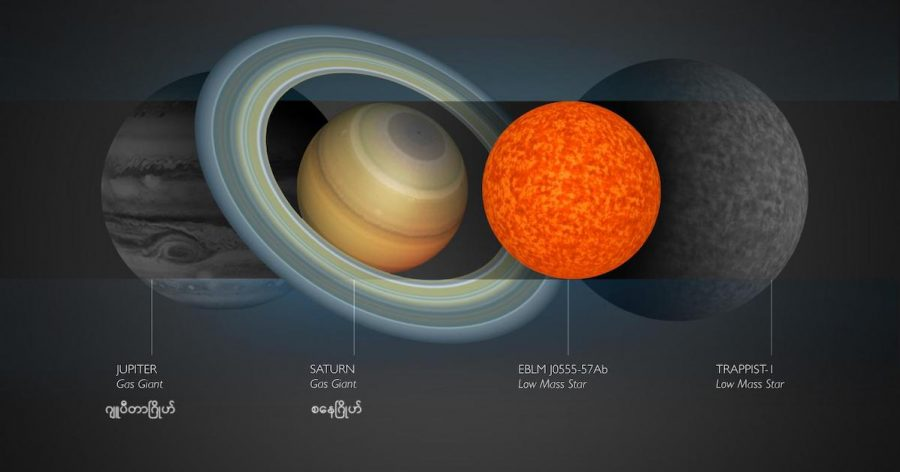

မစ်ကီးဝေး ဂလက်ဆီ အတွင်းမှာ ရှာတွေ့ခဲ့ ဖူးသမျှ ကြယ်တွေ ထဲမှာ အသေးဆုံး လို့ ပြောလို့ရတဲ့ ကြယ်ကို နက္ခတ်ပညာရှင်တွေဟာ ၂၀၁၇ ခုနှစ်က အမှတ်မထင် ရှာဖွေ တွေ့ရှိခဲ့တာ ဖြစ်ပါတယ်။
ဒီ ပညာရှင် တွေဟာ တကယ်တော့ ကြယ် သေးသေး လေးတွေကို လိုက်ရှာနေ ခဲ့တာ မဟုတ်ပါဘူး။ သူတို့ ရှာဖွေ နေခဲ့တာက နေ အဖွဲ့အစည်း ပြင်ပက ကြယ်တွေကို ပတ်နေတဲ့ ဂြိုဟ်တွေ ဖြစ်ပါတယ်။
ဒီ အသစ် တွေ့ရှိခဲ့တဲ့ ကြယ် ပိစိ လေးကို EBLM J0555-57Ab လို့ အမည် ပေးထားပါတယ်။ ဒီ ကြယ်လေးဟာ ကမ္ဘာက နေဆို အလင်းနှစ် ၆၀၀ လောက် ဝေးပါတယ်။
သူ့ရဲ့ ဒြပ်ထုဟာ ဂျူပီတာ (ကြာသပတေးဂြိုဟ်) ရဲ့ ဒြပ်ထုရဲ့ ၈၅ ဆ ပဲ ရှိပါတယ်။ ဒီ ဒြပ်ထု ပမာဏဟာ ဒီ့မတိုင်မီ အသေးဆုံး ဖြစ်ခဲ့တဲ့ TRAPPIST-1 ကြယ်ရဲ့ ဒြပ်ထုနဲ့ အတူတူ ပါပဲ။ ဒါပေမယ့် သူ့ရဲ့ အရွယ်ကတော့ TRAPPIST-1 ထက် ၃၀% လောက် ပိုသေးပါတယ်။ ဒါ့ကြောင့် မစ်ကီးဝေး ထဲက အသေးဆုံး ကြယ် ဘွဲ့ကို အသစ်တွေ့တဲ့ ကြယ်က လက်ပြောင်း ရယူ သွားပါတယ်။
အခု တွေ့ရှိတဲ့ ကြယ်ကို WASP (the Wide Angle Search for Planets) စီမံကိန်းက လေ့လာ ရရှိတဲ့ အချက်အလက်တွေကို အသေးစိတ် လေ့လာရင်း တွေ့ရှိခဲ့တာ ဖြစ်ပါတယ်။
ဒီ စီမံကိန်းဟာ တကယ်က ဂြိုဟ်တွေကို ရှာဖွေ တဲ့ စီမံကိန်း ဖြစ်ပါတယ်။ ဒီ စီမံကိန်းက ဖမ်းယူရရှိတဲ့ အချက်အလက်တွေကို အသေးစိတ် စမ်းစစ်နေတဲ့ နက္ခတ် ပညာရှင် တွေဟာ ကြယ်တစ်စင်းရဲ့ အလင်းရောင် မှိန်လိုက် လင်းလိုက် ဖြစ်နေတာကို သတိထားမိ ခဲ့ပါတယ်။
ဒီလို ကြယ်ရဲ့ အလင်းရောင် အချိန်မှန် မှိန်မှိန် သွားတာဟာ ထုံးစံ ကတော့ ဒီ ကြယ်ကို ပတ်နေတဲ့ ဂြိုဟ်တစ်စင်း ရှိနေလို့ပဲ ဖြစ်ပါတယ်။ ဒါပေမယ့် ဒီ ဂြိုဟ်ရဲ့ ဒြပ်ထုကို တွက်ကြည့်လိုက်တဲ့ အခါမှာတော့ အရမ်း ကြီးမား နေတာကို တွေ့ရှိ ကြရပါတယ်။
ဒီလောက် ကြီးမားတဲ့ ဒြပ်ထု ရှိတဲ့ အရာဝတ္ထု တစ်ခုဟာ ဂြိုဟ်တစ်စင်း ဘယ်လိုမှ မဖြစ်နိုင် တော့ပါဘူး။ ဒီနည်းနဲ့ ပညာရှင် တွေဟာ ဒီ အရာဝတ္ထုဟာ ကြယ်တစ်စင်း ဖြစ်တယ် ဆိုတာကို တွေ့ရှိခဲ့ ကြတာပါ။ အရမ်း သေးတဲ့ ကြယ်တစ်စင်း ပေါ့။
ဒီ ကြယ်ဟာ သူ့ထက် အဆများစွာ ကြီးတဲ့ ကြယ်ကြီး တစ်စင်းကို ပတ်နေတာ ဖြစ်ပါတယ်။ ဒီ ကြယ်လေးဟာ သူ့ မိခင်ကြယ်မကြီးကို တစ်ပတ်ပြည့်အောင် ပတ်ဖို့ အချိန် ၇.၈ ရက်ပဲ ကြာပါတယ်။
ဒီ ကြယ်ဟာ အရမ်း အရွယ် သေးငယ်ပေမယ့် သူ့မှာ ရှိတဲ့ ဒြပ်ထုဟာ ဒီ နေအတွင်းထဲမှာ ဟိုက်ဒြိုဂျင် ကို ဟီလီယံ ဖြစ်အောင် ပြောင်းတဲ့ နျူကလိယ အဏုမြူ ဓါတ်ပြုမှု ဖြစ်ဖို့ လုံလောက်တဲ့ ဒြပ်ထု ပမာဏတော့ ရှိနေပါ သေးတယ်။ ဒါ့ကြောင့်လဲ သူ့ကို ကြယ်အဖြစ် သတ်မှတ်လို့ ရတာ ဖြစ်ပါတယ်။
ဒီ ကြယ်ရဲ့ အရွယ်ဟာ စေတန် (စနေဂြိုဟ်) ထက် နည်းနည်းလေးပဲ ပိုကြီးပါတယ်။ ဒါပေမယ့် သူ့ရဲ့ ဆွဲငင်အား ကတော့ ကမ္ဘာ့ ဆွဲအားထက် အဆ ၃၀၀ လောက် ပိုပြင်းပါတယ်။
မစ်ကီးဝေး ထဲမှာ ဒီ့ထက် ပိုသေးတဲ့ ကြယ် မတွေ့နိုင်တော့ ဘူးလားလို့ မေးစရာ ရှိပါတယ်။
အဖြေကတော့ သူနဲ့ အရွယ်တူ၊ ဒြပ်ထုတူတဲ့ ကြယ်တွေ ရှိနေနိုင် သေးပေမယ့် သူ့ထက် ဒြပ်ထု ပိုလျော့နည်းတဲ့ ကြယ်တော့ ရှိနိုင်တော့မှာ မဟုတ်ပါဘူး။ ဘာ့ကြောင့်ဆို သူ့ထက် ဒြပ်ထု နည်းနည်းလေး ပိုနည်းသွားမယ် ဆိုရင် (အတိအကျ ပြောရင် ဂျူပီတာရဲ့ ဒြပ်ထု အဆ ၈၃ ဆလောက် ဆိုရင်) ကြယ် စစ်စစ် တစ်စင်း အဖြစ်ကနေ Brown Dwarf လို့ ခေါ်တဲ့ ကြယ်ညိုပု ကလေး အဖြစ် ပြောင်းသွားမှာ ဖြစ်ပါတယ်။
ကြယ်ညိုပု ဆိုတာက ဂြိုဟ်ထက် ဒြပ်ထု များပေမယ့် နေတစ်စင်း အတွင်းထဲမှာ ဖြစ်နေတဲ့ အဏုမြူ ဓါတ်ပြုမှု ဖြစ်ဖို့ လုံလောက်တဲ့ အပူချိန် နဲ့ ဖိ အား မရှိရဖို့ လိုအပ်တဲ့ ဒြပ်ထု ပမာဏ မရှိတဲ့ ကြယ်တွေ ကို ခေါ်တာ ဖြစ်ပါတယ်။
အတိ အကျ ပြောရရင် Brown Dwarf ဆိုတာ ကြယ် ဖြစ်ဖို့ ကြိုးစားရင်း အဆင့် မမှီလို့ ကြယ်ဖြစ်ခွင့် မရပဲ ကြယ်မကျ ဂြိုဟ်မက တဲ့ အရာဝတ္ထုတွေ ဖြစ်ပါတယ်။
Reference:
Astronomers just discovered the smallest star ever | Astronomy
EBLM J0555-57 | Wikipedia
မစ်ကီးဝေး ဂလက်ဆီ အတွင်းက အသေးဆုံး ကြယ်

March 3, 2022
Other Posts
- စကြာဝဠာရဲ့အပြင်ဖက်မှာဘာရှိလဲ
- ဘာ့ကြောင့် T. rex တွေရဲ့ လက်တွေဟာ တိုနေရတာလဲ
- ပိရမစ် တွေကို ဘယ်လို တည်ဆောက်ခဲ့သလဲ
- ရှေးအီဂျစ် နတ်ဘုရားကျောင်းအောက် ဥမင်လှိုဏ်ခေါင်းကြီး တစ်ခု ရှာတွေ့
- တရုတ်ရဲ့ ရှင်းတျန်း တယ်လီစကုပ်ဟာ အမေရိကန်ရဲ့ ဂျိမ်းစ်ဝက်ဘ် ကို ယှဉ်နိုင်မလား
- အင်္ဂါဂြိုဟ် ဥက္ကာတွင်းကြီးတွေ အတွင်းက ထူးဆန်းသော ပုံသဏ္ဍာန်များ
- တရုတ်ထက် ဦးအောင် လပေါ်မှာ သတ္တုတူးဖို့ နာဆာ ကြိုးပမ်းနေ
- အင်္ဂါဂြိုလ်ပေါ်မှာ မြစ်ချောင်းတွေရှိခဲ့တဲ့ အထောက်အထား
- နက္ခတ် ပညာရှင် ထိုင်းဘုရင်ကြီး မောင်းကွတ်
- အကယ်လို့သာ ကမ္ဘာလည်နှုန်း ပိုမြန်လာရင် ဘာတွေဖြစ်လာ နိုင်သလဲ